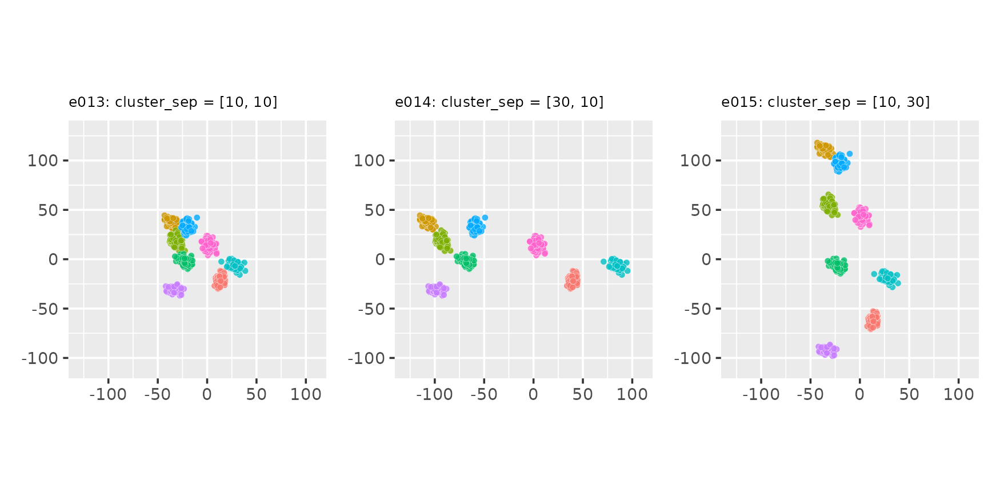
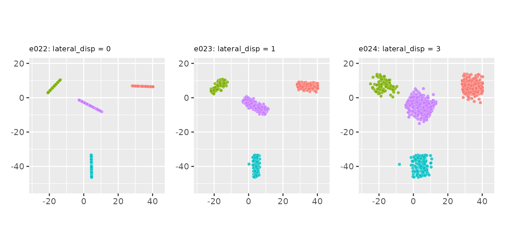

This vignette contains a number of examples on how to use
clugenr in 2D. Examples require the following setup
code:
# Load the clugenr library
library(clugenr)
# Load functions for plotting examples
source("plot_examples_2d.R", local = knitr::knit_global())
# Keep examples reproducible in newer R versions
RNGversion("3.6.0")The 2D examples were plotted with the plot_examples_2d()
function available here.
Manipulating the direction of cluster-supporting lines
Using the direction parameter
seed <- 123
e01 <- clugen(2, 4, 200, c(1, 0), 0, c(10, 10), 10, 1.5, 0.5, seed = seed)
e02 <- clugen(2, 4, 200, c(1, 1), 0, c(10, 10), 10, 1.5, 0.5, seed = seed)
e03 <- clugen(2, 4, 200, c(0, 1), 0, c(10, 10), 10, 1.5, 0.5, seed = seed)
plot_examples_2d(list(e = e01, t = "e01: direction = [1, 0]"),
list(e = e02, t = "e02: direction = [1, 1]"),
list(e = e03, t = "e03: direction = [0, 1]"))
Changing the angle_disp parameter and using a custom
angle_deltas_fn function
seed <- 123
# Custom angle_deltas function: arbitrarily rotate some clusters by 90 degrees
angdel_90_fn <- function(nclu, astd) sample(c(0, pi / 2), nclu, replace = TRUE)
e04 <- clugen(2, 6, 500, c(1, 0), 0, c(10, 10), 10, 1.5, 0.5, seed = seed)
e05 <- clugen(2, 6, 500, c(1, 0), pi / 8, c(10, 10), 10, 1.5, 0.5, seed = seed)
e06 <- clugen(2, 6, 500, c(1, 0), 0, c(10, 10), 10, 1.5, 0.5, seed = seed,
angle_deltas_fn = angdel_90_fn)
plot_examples_2d(list(e = e04, t = "e04: angle_disp = 0"),
list(e = e05, t = "e05: angle_disp = π/8"),
list(e = e06, t = "e06: custom angle_deltas function"))
Manipulating the length of cluster-supporting lines
Using the llength parameter
seed <- 321
e07 <- clugen(2, 5, 800, c(1, 0), pi / 10, c(10, 10), 0, 0, 0.5, seed = seed,
point_dist_fn = "n")
e08 <- clugen(2, 5, 800, c(1, 0), pi / 10, c(10, 10), 10, 0, 0.5, seed = seed,
point_dist_fn = "n")
e09 <- clugen(2, 5, 800, c(1, 0), pi / 10, c(10, 10), 30, 0, 0.5, seed = seed,
point_dist_fn = "n")
plot_examples_2d(list(e = e07, t = "e07: llength = 0"),
list(e = e08, t = "e08: llength = 10"),
list(e = e09, t = "e09: llength = 30"))
Changing the llength_disp parameter and using a custom
llengths_fn function
seed <- 765
# Custom llengths function: line lengths grow for each new cluster
llen_grow_fn <- function(nclu, llen, llenstd) {
llen * 0:(nclu - 1) + rnorm(nclu, sd = llenstd)
}
e10 <- clugen(2, 5, 800, c(1, 0), pi / 10, c(10, 10), 15, 0.0, 0.5,
seed = seed, point_dist_fn = "n")
e11 <- clugen(2, 5, 800, c(1, 0), pi / 10, c(10, 10), 15, 10.0, 0.5,
seed = seed, point_dist_fn = "n")
e12 <- clugen(2, 5, 800, c(1, 0), pi / 10, c(10, 10), 10, 0.1, 0.5,
seed = seed, llengths_fn = llen_grow_fn, point_dist_fn = "n")
plot_examples_2d(list(e = e10, t = "e10: llength_disp = 0.0"),
list(e = e11, t = "e11: llength_disp = 5.0"),
list(e = e12, t = "e12: custom llengths function"))
Manipulating relative cluster positions
Using the cluster_sep parameter
seed <- 222
e13 <- clugen(2, 8, 1000, c(1, 1), pi / 4, c(10, 10), 15, 2, 4, seed = seed)
e14 <- clugen(2, 8, 1000, c(1, 1), pi / 4, c(30, 10), 15, 2, 4, seed = seed)
e15 <- clugen(2, 8, 1000, c(1, 1), pi / 4, c(10, 30), 15, 2, 4, seed = seed)
plot_examples_2d(list(e = e13, t = "e13: cluster_sep = [10, 10]"),
list(e = e14, t = "e14: cluster_sep = [30, 10]"),
list(e = e15, t = "e15: cluster_sep = [10, 30]"))
Changing the cluster_offset parameter and using a
custom clucenters_fn function
seed <- 222
# Custom clucenters function: places clusters in a diagonal
centers_diag <- function(nclu, csep, coff) {
matrix(1, nrow = nclu, ncol = length(csep)) * (1:nclu * max(csep)) +
rep(coff, each = nclu)
}
e16 <- clugen(2, 8, 1000, c(1, 1), pi / 4, c(10, 10), 10, 2, 2.5, seed = seed)
e17 <- clugen(2, 8, 1000, c(1, 1), pi / 4, c(10, 10), 10, 2, 2.5, seed = seed,
cluster_offset = c(20, -20))
e18 <- clugen(2, 8, 1000, c(1, 1), pi / 4, c(10, 10), 10, 2, 2.5, seed = seed,
cluster_offset = c(-50, -50), clucenters_fn = centers_diag)
plot_examples_2d(list(e = e16, t = "e16: default"),
list(e = e17, t = "e17: cluster_offset = [20, -20]"),
list(e = e18, t = "e18: custom clucenters function"))
Lateral dispersion and placement of point projections on the line
seed <- 234Normal projection placement (default):
proj_dist_fn = "norm"
Uniform projection placement:
proj_dist_fn = "unif"
e22 <- clugen(2, 4, 1000, c(1, 0), pi / 2, c(20, 20), 13, 2, 0.0, seed = seed,
proj_dist_fn = "unif")
e23 <- clugen(2, 4, 1000, c(1, 0), pi / 2, c(20, 20), 13, 2, 1.0, seed = seed,
proj_dist_fn = "unif")
e24 <- clugen(2, 4, 1000, c(1, 0), pi / 2, c(20, 20), 13, 2, 3.0, seed = seed,
proj_dist_fn = "unif")
plot_examples_2d(list(e = e22, t = "e22: lateral_disp = 0"),
list(e = e23, t = "e23: lateral_disp = 1"),
list(e = e24, t = "e24: lateral_disp = 3"))
Custom projection placement using the Beta distribution
# Custom proj_dist_fn: point projections placed using the Beta distribution
proj_beta <- function(len, n) len * rbeta(n, 0.1, 0.1) - len / 2
e25 <- clugen(2, 4, 1000, c(1, 0), pi / 2, c(20, 20), 13, 2, 0.0, seed = seed,
proj_dist_fn = proj_beta)
e26 <- clugen(2, 4, 1000, c(1, 0), pi / 2, c(20, 20), 13, 2, 1.0, seed = seed,
proj_dist_fn = proj_beta)
e27 <- clugen(2, 4, 1000, c(1, 0), pi / 2, c(20, 20), 13, 2, 3.0, seed = seed,
proj_dist_fn = proj_beta)Controlling final point positions from their projections on the cluster-supporting line
seed <- 12321
# Custom proj_dist_fn: point projections placed using the Beta distribution
proj_beta <- function(len, n) len * rbeta(n, 0.1, 0.1) - len / 2Points on hyperplane orthogonal to cluster-supporting line
(default): point_dist_fn = "n-1"
e28 <- clugen(2, 5, 1500, c(1, 0), pi / 4, c(20, 20), 14, 2, 2.0, seed = seed)
e29 <- clugen(2, 5, 1500, c(1, 0), pi / 4, c(20, 20), 14, 2, 2.0, seed = seed,
proj_dist_fn = "unif")
e30 <- clugen(2, 5, 1500, c(1, 0), pi / 4, c(20, 20), 14, 2, 2.0, seed = seed,
proj_dist_fn = proj_beta)
plot_examples_2d(list(e = e28, t = "e28: proj_dist_fn = 'norm' (default)"),
list(e = e29, t = "e29: proj_dist_fn = 'unif'"),
list(e = e30, t = "e30: custom proj_dist_fn (Beta dist.)"))
Points around projection on cluster-supporting line:
point_dist_fn = "n"
e31 <- clugen(2, 5, 1500, c(1, 0), pi / 4, c(20, 20), 14, 2, 2.0, seed = seed,
point_dist_fn = "n")
e32 <- clugen(2, 5, 1500, c(1, 0), pi / 4, c(20, 20), 14, 2, 2.0, seed = seed,
point_dist_fn = "n", proj_dist_fn = "unif")
e33 <- clugen(2, 5, 1500, c(1, 0), pi / 4, c(20, 20), 14, 2, 2.0, seed = seed,
point_dist_fn = "n", proj_dist_fn = proj_beta)Custom point placement using the exponential distribution
# Custom point_dist_fn: final points placed using the Exponential distribution
clupoints_n_1_exp <- function(projs, lat_std, len, clu_dir, clu_ctr) {
dist_exp <- function(npts, lstd) lstd * rexp(npts, rate = 2 / lstd)
clupoints_n_1_template(projs, lat_std, clu_dir, dist_exp)
}
e34 <- clugen(2, 5, 1500, c(1, 0), pi / 4, c(20, 20), 14, 2, 2.0, seed = seed,
point_dist_fn = clupoints_n_1_exp)
e35 <- clugen(2, 5, 1500, c(1, 0), pi / 4, c(20, 20), 14, 2, 2.0, seed = seed,
point_dist_fn = clupoints_n_1_exp, proj_dist_fn = "unif")
e36 <- clugen(2, 5, 1500, c(1, 0), pi / 4, c(20, 20), 14, 2, 2.0, seed = seed,
point_dist_fn = clupoints_n_1_exp, proj_dist_fn = proj_beta)
plot_examples_2d(list(e = e34, t = "e34: proj_dist_fn = 'norm' (default)"),
list(e = e35, t = "e35: proj_dist_fn = 'unif'"),
list(e = e36, t = "e36: custom proj_dist_fn (Beta dist.)"))
Manipulating cluster sizes
seed <- 87
# Custom clucenters_fn (all): yields fixed positions for the clusters
centers_fixed <- function(nclu, csep, coff) {
matrix(c(-csep[1], -csep[2], csep[1], -csep[2], -csep[1], csep[2], csep[1], csep[2]),
nrow = nclu, byrow = TRUE)
}
# Custom clusizes_fn (e38): cluster sizes determined via the uniform distribution,
# no correction for total points
clusizes_unif <- function(nclu, npts, ae) sample(2 * npts / nclu, nclu, replace = TRUE)
# Custom clusizes_fn (e39): clusters all have the same size, no correction for
# total points
clusizes_equal <- function(nclu, npts, ae) npts %/% nclu * rep.int(1, nclu)
e37 <- clugen(2, 4, 1500, c(1, 1), pi, c(20, 20), 0, 0, 5, seed = seed,
clucenters_fn = centers_fixed, point_dist_fn = "n")
e38 <- clugen(2, 4, 1500, c(1, 1), pi, c(20, 20), 0, 0, 5, seed = seed,
clucenters_fn = centers_fixed, clusizes_fn = clusizes_unif,
point_dist_fn = "n")
e39 <- clugen(2, 4, 1500, c(1, 1), pi, c(20, 20), 0, 0, 5, seed = seed,
clucenters_fn = centers_fixed, clusizes_fn = clusizes_equal,
point_dist_fn = "n")
plot_examples_2d(list(e = e37, t = "e37: normal dist. (default)"),
list(e = e38, t = "e38: unif. dist. (custom)"),
list(e = e39, t = "e39: equal size (custom)"))